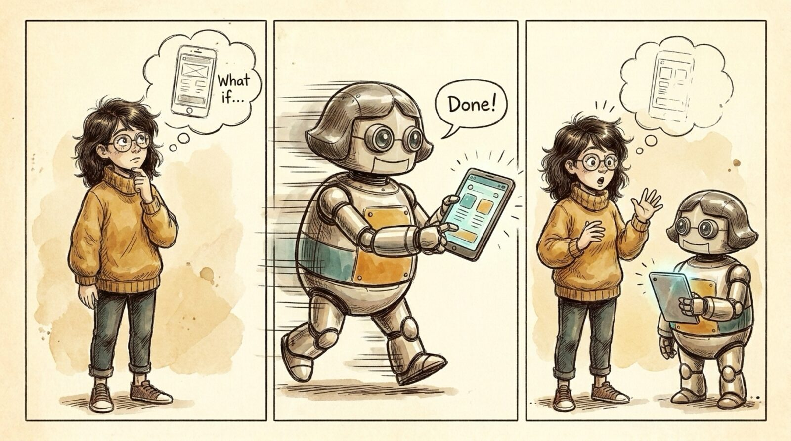

<section id="w04" data-transition="fade" style="background:#F5EEE0;color:#222222;font-family:Arial, Helvetica, sans-serif;padding:0;display:flex;flex-direction:column">

<aside>Wrong #3: execution got WAY faster -- faster than you can think. With Opus 5.5 and Sonnet 5.5, think-to-demo takes minutes.</aside>
</section>
